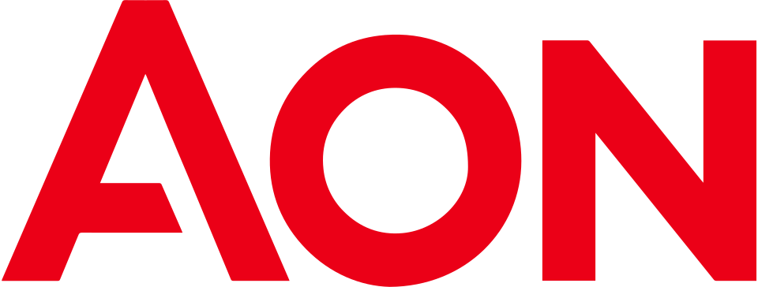

Aon(회사) Aon plc
Aon(회사)(Aon plc)는 위험 관리와 보험 중개, 인적자본 관련 자문을 제공하는 영국의 국제 전문 서비스 회사이다. 사업은 Risk Capital과 Human Capital 두 부문으로 구성한다.
최종 업데이트

Aon(회사)는 어떤 브랜드인가
Aon은 위험, 보험, 재보험과 인적자본 분야를 대상으로 중개 및 자문 서비스를 제공한다. Risk Capital은 위험 관리와 보험·재보험 중개 및 컨설팅을 담당하며 2024년 매출의 67%를 차지한다.
Human Capital은 건강보험, 퇴직계획, 연금계획과 인재 자문 서비스를 담당하며 같은 해 매출의 33%를 차지한다. 세계에서 두 번째로 큰 보험 중개회사이며 Fortune 500에서 300위, Forbes Global 2000에서 388위에 해당한다.
기업 본사는 더블린에 기반하고 글로벌 운영은 런던에 기반하며, 시카고의 Aon Center에도 주요 북미 운영 거점을 유지한다.
Aon(회사)는 어떻게 시작되고 성장했나
Aon은 1982년 시카고에서 Patrick George Ryan이 이끌던 Ryan Insurance Group과 W. Clement Stone의 Combined Insurance Company of America가 합병하며 출범했다.
Patrick Ryan은 1964년 자동차 신용보험 회사로 사업을 시작했고 1976년 Esmark의 보험 중개 부문을 인수했다. 합병 뒤 보험 중개와 고급 보험상품에 집중했으며 인력 감축과 비용 절감도 실시했다.
1987년 지주회사 이름을 게일어로 ‘하나’를 뜻하는 aon에서 따온 Aon으로 변경했다. 이후 1992년 Hudig-Langeveldt를 인수하고 1995년 직접 생명보험 보유분을 General Electric에 매각해 컨설팅에 집중했다.
Aon(회사)의 브랜드 아이덴티티는 무엇인가
보험·재보험 위험을 다루는 Risk Capital과 건강·퇴직·인재를 다루는 Human Capital을 함께 운영하는 구조가 구분점이다.
Aon(회사)의 대표 제품과 서비스는 무엇인가
Risk Capital은 위험 관리에 필요한 보험과 재보험의 중개 및 컨설팅 서비스를 제공하며 전체 사업에서 가장 큰 비중을 차지한다. Human Capital은 건강보험, 퇴직계획과 연금계획, 인재 관련 자문을 제공한다.
미국의 크루즈 회사와 여행 운영사를 대상으로 여행보험을 제공하던 Berkely Arm, Inc 인수 사업은 이후 Aon Affinity Travel Practice로 발전했다. 회사는 직접 보험 판매보다 기업과 고객의 위험 및 인적자본 의사결정을 지원하는 전문 서비스에 집중한다.
Aon(회사)는 지금 어떤 상태인가
Aon은 세계에서 두 번째로 큰 보험 중개회사이며 2024년 매출 구성은 Risk Capital 67%, Human Capital 33%이다. 기업 본사는 더블린에 두고 글로벌 운영은 런던에서 수행하며, 시카고 Aon Center에 주요 북미 운영 기반을 유지한다.
사업 규모는 Fortune 500 300위와 Forbes Global 2000 388위에 해당한다.
Aon(회사) 로고는 어떻게 변해왔나
자주 묻는 질문
Aon(회사)는 어느 나라 브랜드인가요?
Aon(회사)는 영국의 금융 브랜드입니다.
Aon(회사)는 언제 설립되었나요?
Aon(회사)는 1982년 설립되었습니다.
Aon(회사)의 브랜드 아이덴티티는 무엇인가요?
보험·재보험 위험을 다루는 Risk Capital과 건강·퇴직·인재를 다루는 Human Capital을 함께 운영하는 구조가 구분점이다.
Aon(회사)의 대표 제품은 무엇인가요?
Risk Capital은 위험 관리에 필요한 보험과 재보험의 중개 및 컨설팅 서비스를 제공하며 전체 사업에서 가장 큰 비중을 차지한다.
Aon(회사)는 현재 어떤 상태인가요?
Aon은 세계에서 두 번째로 큰 보험 중개회사이며 2024년 매출 구성은 Risk Capital 67%, Human Capital 33%이다.
Aon(회사)의 창업자는 누구인가요?
Aon(회사)의 창업자는 Patrick George Ryan입니다(위키데이터 기준).
Aon(회사)의 본사는 어디에 있나요?
Aon(회사)의 본사는 런던에 있습니다(위키데이터 기준).
출처와 검증
Aon(회사) 관련 참고: 공식 웹사이트 · 위키데이터 Q739518 · 한국어 위키백과 · 영어 위키백과. 브랜드명은 한글과 원어를 함께 표기하되 데이터에 없는 표기는 만들지 않습니다. 기원 국가·설립연도는 검수된 정의문에서 확인된 값을 우선하고, 없을 때만 공식 웹사이트 URL이 일치하는 위키데이터 개체의 값을 씁니다. 위키데이터 값은 2026-09-12 기준입니다.